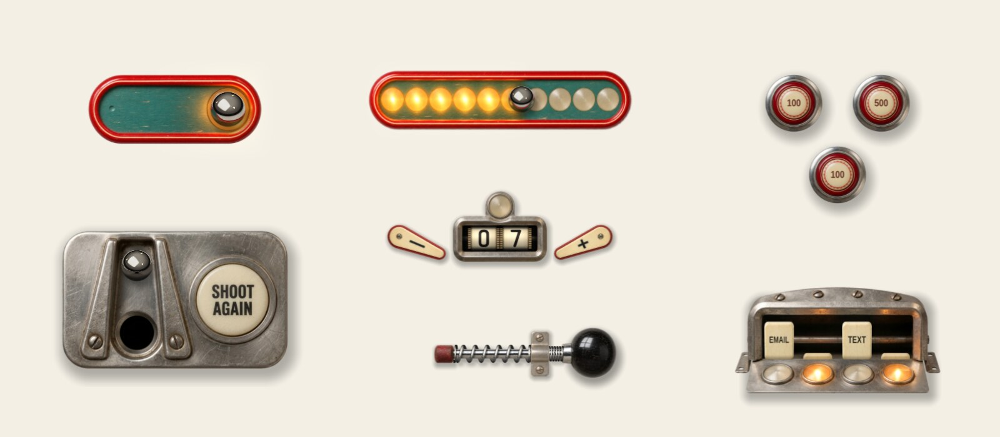

29 standalone interface components. The original pinball controls use photographed mechanisms, a live chrome ball and recorded sounds; the expanded utility controls use lightweight CSS and native browser semantics. No runtime package dependencies.
Loading component catalogue…
Explore the live controls. The original mechanical set initializes sound after the first interaction. Utility components use native inputs and CSS-based presentation. Test reduced-motion and browser behavior in your target environment.